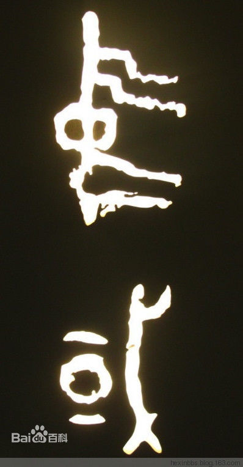
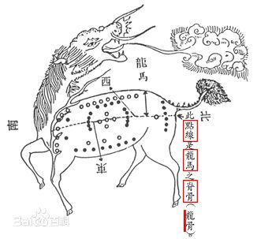
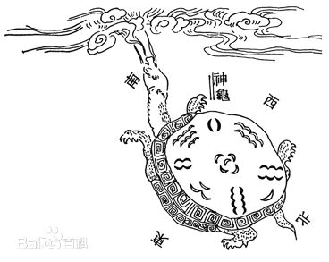
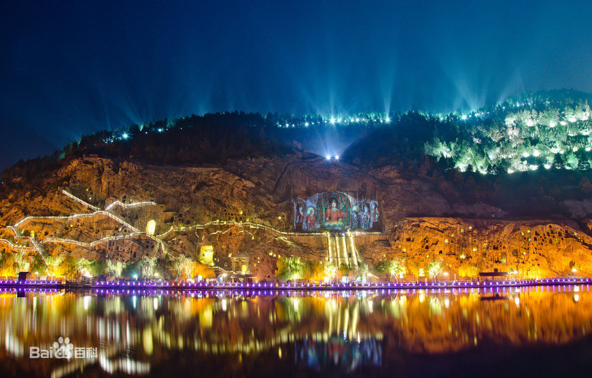
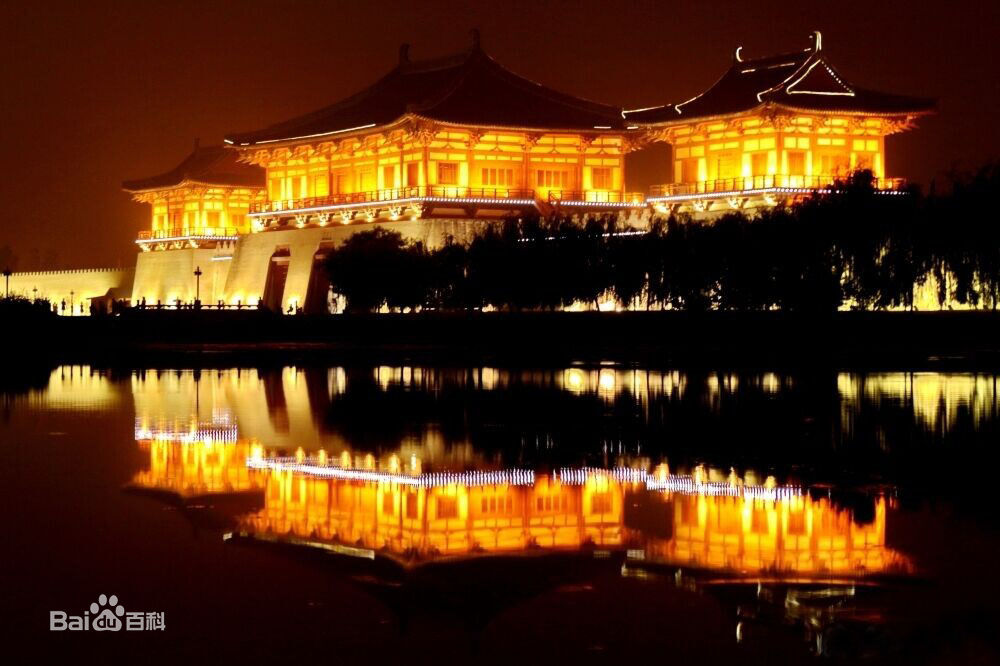
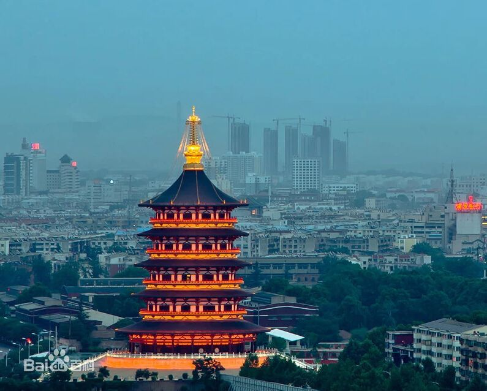
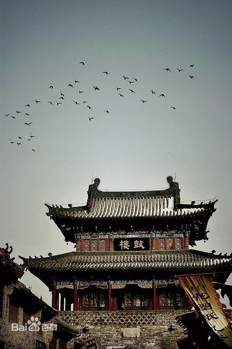

洛阳 luoyang |
||||||||
| 洛阳古称雒阳、豫州，位于河南西部、黄河中游，因地处洛河之阳而得名，是国务院首批公布的历史文化名城，也是中部地区重要的工业城市。洛阳有着5000多年文明史、4000年的建城史 和1500多年的建都史，先后有105位帝王在此定鼎九州。是华文明的发源一、中华民族的发祥地之一。是隋唐大运河的重要枢纽。牡丹因洛阳而闻名于世，被誉为“千年帝都，牡丹花城”。 洛阳先后荣膺中国优秀旅游城市、全国文明城市、中国十大最佳魅力城市等荣誉称号。2014年，洛阳市入选了国家新型城镇化综截至2015年洛阳拥有三项世界文化遗产，沿洛河两岸分布着夏都二里头遗址、偃师商城、东周王城、汉魏故城、隋唐洛阳城等五大都城遗址。 | ||||||||
| 历史沿革 | ||||||||
中国古代帝喾、唐尧、虞舜、夏禹等神话，多传于此，夏太康迁都斟鄩，商汤定都西亳；武王伐纣，八百诸侯会孟津；周公辅政，迁九鼎于洛邑。平王东迁，高祖都洛，光武中兴，魏晋相禅，孝文改制，隋唐盛世，后梁唐晋，相因沿袭，共十三个王朝。洛阳自古被华夏先民认为是“天下之中”。周武王甫定江山即“迁宅于成周，宅兹中国”；汉魏以后，洛阳逐渐成为国际大都市，“四方入贡，道里均”，在民族融合和中外交流上功勋卓异、光耀千秋。 |
 | |||||||
| 洛阳城位于洛水之北，水之北乃谓“阳”，故名洛阳，又称洛邑、神都。境内山川纵横，西靠秦岭，东临嵩岳，北依王屋山——太行山，又据黄河之险，南望伏牛山，自古便有“八关都邑，八面环山，五水绕洛城”的说法，因此得“河山拱戴，形胜甲于天下”之名，"天下之中、十省通衢”之称。 | ||||||||
| 从中国第一个王朝夏朝开始，先后有商、西周、东周、东汉、曹魏、西晋、北魏、隋、唐等十三个正统王朝在洛阳建都，拥有1500多年建都史，是中国历史上建都最早、朝代最多、历时最长、跨度最大的城市，"普天之下无二置，四海之内无并雄"。先后100多个帝王在这里指点江山，因此有“千年帝都”之称，与西安、南京、北京并列为中国四大古都，是中国历史上唯一女皇武则天定都的城市，也是中国历史上唯一被法定命名为神都的城市，以洛阳为中心的河洛文化是中华民族文明的源头与核心，河图洛书在此诞生，儒、释、道、玄、理肇始于此。丝绸之路与隋唐大运河在此交汇，中国的国名便源自古洛阳，牡丹因洛阳而闻名于世，被世人誉为“千年帝都，牡丹花城”。 洛书 洛书 洛阳有着数千年文明史、建城史和建都史，中国古代伏羲、女娲、黄帝、唐尧、虞舜、夏禹等神话，多传于此。从夏朝开始先后有十三个王朝在此定都，有105位帝王在洛阳指点江山。洛阳是中国历史上唯一被命名为“神都”（神州大地之首都）的城市。是我国建都时间最早，时间最长的城市。 洛阳历史曾用名或别名，斟鄩、西毫、洛邑、洛师、成周、王城、雒阳、神都、京洛、洛京、中京、伊洛、河洛、河南、洛州、三川。 | 河图 | |||||||
| 洛阳，立河洛之间，居天下之中，既禀中原大地敦厚磅礴之气，也具南国水乡妩媚风流之质。开天辟地之后，三皇五帝以来，洛阳以其天地造化之大美，成为天人共羡之神都。洛阳代表最早的中国，也是最本色的中国、最渊深的中国。 洛阳城，北据邙山，南望伊阙，洛水贯其中，东据虎牢关，西控函谷关，四周群山环绕、雄关林立，因而有“八关都邑”、“山河拱戴，形势甲于天下”之称；而且雄踞“天下之中”，“东压江淮，西挟关陇，北通幽燕，南系荆襄”，人称“八方辐辏”、“九州腹地”、“十省通衢”。所以历朝历代均为诸侯群雄逐鹿中原的皇者必争之地，成为历史上最重要的政治、经济、文化中心。 龙门石窟夜景 龙门石窟夜景 远在五六十万年前的旧石器时代，已有先民在此繁衍生息。新石器时代（距今八九千年前至四五千年前），黄河中游两岸及伊、洛、瀍、涧等河流的台地上，分布着许多氏族部落，新中国成立后在洛阳一带发现的孙旗屯遗址、王湾遗址、矬李遗址等近200处聚落遗址，便是当时人们居住、生活的地方。 | ||||||||
| 禹划九州，河洛属古豫州地。洛阳是夏王朝立国和活动的中心地域，太康、仲康、帝桀皆以斟鄩（今偃师二里头）为都。二里头（一至四期）年代范围约为公元前1735-公元前1540年。 公元前1600年，商朝建立。商汤建都西亳（二里头遗址东北约6千米）。商汤之后的数代帝王均以此为都，前后累计200余年。偃师商城（一至三期）的年代范围约为公元前1600-公元前1260年。 公元前1046年，西周代殷后，为控制东方地区，开始在洛阳营建国都。周公在洛水北岸修建了王城和成周城，史称成王“初迁宅于成周”，“定鼎于郏鄏”，曾迁殷顽民于成周，并以成周八师监督之。当时洛阳称洛邑、新邑、大邑、成周、天室、中国等，亦称周南。周平王元年（前770年），周平王东迁洛邑，是为东周，自此，有23个国王都居洛阳，前后历经500余年之久。 |
洛书 | |||||||
| 秦庄襄王元年（前249年），秦在洛阳置三川郡，郡治成周城。 汉王元年（前206年），项羽封申阳为河南王，居洛阳。汉高祖五年（前202年），刘邦建汉，初都洛阳，后迁长安，改三川郡为河南郡，治洛阳。辖洛阳、河南（汉置，治王城）、偃师、缑氏、平（偃师西北）、平阴（孟津东北）、新成（伊川西南）、榖成（新安东）及巩、荥阳、新郑、中牟、开封等22县。汉武帝置十三州部刺史，河南郡属司隶。 |
龙门夜景 | |||||||
| 西汉末年，王莽篡政，改洛阳为宜阳，设“新室东都”和“中市”。汉光武建武元年（25年），刘秀定都洛阳，改洛阳为雒阳，建武十五年（39年），更河南郡为河南尹。汉永和五年（140年），河南尹“有户二十万八千四百八十六，有口一百零一万零八百二十七”。黄初元年（220年）年，魏文帝曹丕定都洛阳，变雒阳为洛阳，设司隶校尉部。泰始元年（265年），西晋代魏，仍以洛阳为都。东晋时称故都洛阳为中京，一直沿用到南朝宋武帝、宋文帝、宋明帝。太延二年（436年），北魏在洛阳置洛州，太和十八年（494年）孝文帝迁都洛阳。东汉、曹魏、西晋、北魏都洛共计330余年。北周平齐之后,升洛阳为东京，设置六府官,号东京六府。 | ||||||||
| 隋开皇元年（581年），在洛阳置东京尚书省；次年，置河南道行台省；三年，废行台，以洛州刺史领总监；十四年，于金墉城别置总监。大业元年（605年），隋炀帝迁都洛阳，在东周王城以东，汉魏故城以西18里处，新建洛阳城。同年，改洛州（东魏改司州置）为豫州，三年又改河南郡，十四年复置洛州，辖河南、洛阳、偃师、缑氏、阌乡、桃林、陕、熊耳、渑池、新安、巩、宜阳、寿安、陆浑、伊阙、兴泰、嵩阳、阳城等18县。 唐代自高宗始仍以洛阳为都，称东都。武德四年（621年），置洛州总管府，辖洛州、郑州、熊州、榖州、嵩州、管州、伊州、汝州、鲁州等九州，洛州辖洛阳、河南、偃师、缑氏、巩、阳城、嵩阳、陆浑、伊阙等9县。贞观元年（627年），分全国为十道，洛阳属河南道。显庆二年（657年）置东都。开元元年（713年），改洛州为河南府。开元二十一年（733年），于洛阳置都畿道。天宝年间，改东都为东京。洛州、河南府均治洛阳。 |
定鼎门 | |||||||
| 武则天光宅元年（684年）始，改东都为神都，对都城进行扩建，修建了明堂、万国天枢等。武则天称帝后，改国号为周，定都洛阳，以更大的规模开凿龙门石窟，奉先寺卢舍那大像龛便是盛唐雕刻艺术的辉煌代表。武则天还令薛怀义为白马寺住持，大规模整修白马寺。唐代，中国佛教臻于鼎盛，佛教史上势力最大、影响最广、流传最久的教派禅宗在洛阳形成。唐玄宗长期居洛，曾敕令大修中岳庙，并赐风穴寺（在今汝州）内佛塔名“七祖塔”。 | ||||||||
| 唐天祐四年（907年），唐室亡祚，其后中原地区相继出现了后梁、后唐、后晋、后汉、后周五个短暂的王朝，史称五代。其中，后梁、后唐、后晋均曾都洛阳，后汉、后周以洛阳为陪都。这一时期洛阳仍是全国政治、经济、文化的中心。 宋以洛阳为西京，置河南府。朝廷设“国子监”于洛阳，名臣遗老和文人学士多会于此，赵普、吕蒙正、富弼、文彦博、欧阳修都曾居住洛阳。理学家程氏兄弟、邵雍等，在洛阳著书讲学。司马光在洛阳完成了史学巨著《资治通鉴》。金代定洛阳为中京，改河南府曰金昌府，并河南县入洛阳县。时因洛阳旧城毁弃，便在隋唐城东北角另筑新城，周围不足9里，即今日老城之前身，它仅是隋唐洛阳城的一小部分而已。 |
天堂 | |||||||
| 自元代始，洛阳不复为京，降为河南府治。明代河南府辖洛阳、偃师、巩县、孟津、登封、新安、渑池、宜阳、永宁、嵩县等10县，又是伊王和福王的封地。清代洛阳仍为河南府治。 | ||||||||
| 民国元年（1912年），民国建立，废河南府，设河洛道，道尹公署驻洛阳，辖洛阳、偃师等19县。民国9年（1920年），直系军阀吴佩孚盘踞洛阳，在洛阳设置了两湖巡阅使公署和陆军第三师司令部。民国12年（1923年），河南省长公署适于洛阳，洛阳成为河南省会。民国21年（1932年），日军进攻上海，国民党政府定洛阳为行都，并一度迁洛办公。“七七事变”后，华北大部分地区沦陷，洛阳成为北方抗日前哨，国民党第一战区长官司令部驻洛阳。民国27年（1939年）秋，河南省政府再次迁洛，洛阳第二次成为河南省会。 | 洛阳鼓楼 | |||||||
| 迎观看视频《6分钟了解洛阳》 | ||||||||